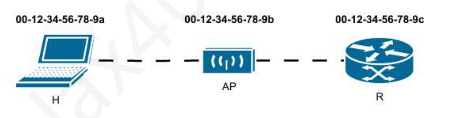
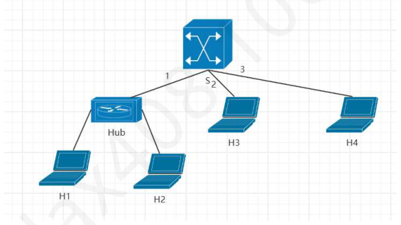

第 61 题
在采⽤CSMA/CA 的802.11⽆线局域⽹中，若采⽤RTS/CTS 机制，已知DIFS 为120μs，SIFS为28μs，RTS 帧、CTS 帧、ACK 帧的发送时延分别为3μs、2μs、2μs，数据帧的发送时延为296µs，信号传播时延忽略不计。主机A 通过RTS/CTS 机制向AP 发送一个数据帧。若邻近主机A 的站点C（非AP）能够正确接收到A 发送的RTS 帧，但由于位置关系听不到AP 发送的CTS 帧，则站点C 在其NAV 中设置的持续时间应为：
A． 354 μs B． 356 μs C． 384 μs D． 387 μs 答案与解析 答案：C
站点C 能够正确接收到主机A 发送的RTS 帧，但听不到AP 发送的CTS 帧。因此，站点C 的NAV 值是由A 发送的RTS 帧中的“持续时间”字段决定的。发送方A 在发送RTS 帧时，其“持续时间”字段需要覆盖从RTS 帧发送结束到整个数据交换过程（即收到ACK）结束所需的总时间。这个过程包括： •一个短帧间间隔（SIFS）。一个CTS 帧的发送时间。 • • 又一个SIFS。 • 一个数据帧的发送时间。再一个SIFS。 • • 一个ACK 帧的发送时间。则RTS 帧中设置的持续时间为3 ∗𝑆𝐼𝐹𝑆+ 𝑇𝐶𝑇𝑆+ 𝑇𝐷𝐴𝑇𝐴+ 𝑇𝐴𝐶𝐾，即384μs。
教材第 200 页 第 62 题
在采用CSMA/CA 协议的IEEE802.11 无线局域网中，站点A 监听到信道空闲，并在等待DIFS 后，选择了15 个时隙的随机退避时间开始倒计时。当其退避计时器减少到还剩6 个时隙时，站点A 检测到信道上有其他站点开始发送数据，信道变为忙碌状态。在该其他站点的传输结束后，站点A检测到信道重新变为空闲。此时，站点A 的下一个动作应该是：
A． 从剩余的6 个时隙开始继续其退避倒计时 B． 等待一个DIFS 间隔，然后将其退避计时器的值重置为初始的15 个时隙，重新开始倒计时。 C． 等待一个DIFS 间隔，然后从剩余的6 个时隙开始继续其退避倒计时。 D． 等待一个DIFS 间隔，然后重新从[0, CW-1]（CW 为当前竞争窗口）中选择一个新的随机退避时隙值并开始倒计时。 答案与解析 答案：C
CSMA/CA协议规定在倒计时期间，信道变为忙碌状态（即有其他站点在发送），则该站点必须暂停其退避计时器，当信道在之后重新变为空闲时，该站点必须再次等待一个DIFS 间隔，然后从暂停时的计数值开始，继续进行倒计时，而不是重新选择随机值。
教材第 200 页 第 63 题
局域网的协议一般不包括（ ）的内容。
A． 介质访问控制层 B． 物理层 C． 网络层 D． 逻辑链路控制层 答案与解析 答案：C
局域网协议（例如802.3 标准）定义了OSI 参考模型下两层的功能，即物理层和数据链路层。其中，数据链路层又被进一步细分为负责为上层提供统一接口的逻辑链路控制（LLC）子层和负责管理共享信道访问的介质访问控制（MAC）子层。
教材第 200 页 第 64 题
10BASE-T 以太网标准采用的传输介质和数据传输速率分别是（ ）。
A． 同轴电缆，10 Mbps B． 双绞线，10 Mbps C． 光纤，100 Mbps D． 双绞线，100 Mbps 答案与解析 答案：B
10BASE-T是早期以太网标准之一，其命名规则中：10 表示数据传输速率为10Mbps。BASE 表示基带传输。T 表示传输介质为非屏蔽双绞线(UTP)。该标准使用两对UTP（通常是3类或5 类），采用曼彻斯特编码，最大段长为100 米，通常使用RJ-45 连接器连接到集线器或交换机。
教材第 200 页 第 65 题
以太网帧在物理层发送时，位于目的MAC 地址之前，用于使接收端时钟与发送端时钟同步，并标识帧开始的字段组合是（）。
A． 帧校验序列（FCS） B． 前同步码（Preamble）和帧起始定界符（SFD） C． 类型/长度字段和数据字段 D． 源MAC 地址和目的MAC 地址 答案与解析 答案：B
以太网帧在物理层发送时，实际帧的前面会添加前同步码和帧起始定界符。前同步码内容为交替的10101010。用于使接收端的锁相环能够与发送端的比特流时钟同步。帧起始定界符紧跟在前同步码之后，用于明确指示以太网帧的第一个比特（即目的MAC 地址的第一个比特）即将开始。这两个字段加起来共8 字节，它们不计入MAC 帧本身的长度，通常由物理层硬件处理。
教材第 201 页 第 66 题
上层协议交给数据链路层的数据长度为32B，则数据链路层会（ ）。
A． 拒绝发送该数据帧 B． 将数据字段用全0 填充到46 字节，并在长度字段中注明数据长度为32B C． 将数据字段用全0 填充到46 字节，并在长度字段中注明数据长度为46B D． 直接发送数据，并在长度字段中注明数据长度为32B 答案与解析 答案：B
为了保证CSMA/CD 协议的有效冲突检测（即最小帧长要求，通常为64 字节，减去首部和尾部18 字节后，数据字段最小为46 字节），如果上层交付给MAC 子层的数据长度小于46字节，MAC 子层必须在数据字段的末尾填充一些字节（通常是全0），使其达到46 字节的最小长度。这个填充字段不包含在IEEE 802.3 帧的长度字段所指示的长度内，长度字段只指示实际数据的长度。
教材第 201 页 第 67 题
当处于同一个局域网中的两个设备拥有相同的静态MAC 地址时将会发生（ ）
A． 先启动的设备可以使用该地址，另一个设备则无法通信。 B． 后启动的设备可以使用该地址，另一个设备则无法通信。 C． 两个设备都无法正常通信。 D． 两个设备都可以正常通信，由于它]可以阅读整个分组的内容，并知道哪个分组是发送给自己而不是其他设备的。 答案与解析 答案：C
如果在使用静态地址的系统中有重复的硬件地址，两个设备都无法通信。在局域网中的每台设备必须有唯一的硬件地址。
教材第 201 页 第 68 题
以太网V2 帧格式没有显式的帧结束定界符，它是如何确定帧的结束的？
A． 通过帧首部的长度字段 B． 通过满足固定帧长要求 C． 通过物理层编码违例 D． 通过校验和字段的特定值 答案与解析 答案：B
以太网（包括Ethernet V2 和IEEE 802.3）帧的结束不是由特定的帧结束定界符来标记的。当物理层检测到信道上不再有信号（即违规编码法）时，就认为一帧已经结束。此外，以太网还规定了帧间最小间隔。 A 选项错误，以太网V2用“类型字段”，没有长度字段。 B 选项错误，帧长不固定。 D 选项错误，FCS用于错误检测，不是结束判断依据。
教材第 201 页 第 69 题
关于千兆以太网在半双工模式下采用的载波延伸和新的争用期，下列说法中正确的是（ ）。
A． 载波延伸是通过在MAC 帧的数据字段内部填充0 比特，使其实际长度达到512 字节。 B． 新的争用期被定义为发送64 字节数据所需的时间，以保持与传统以太网的兼容性。 C． 若MAC 帧的长度（包括首部和FCS）已达到或超过512 字节，则发送该帧时不再需要进行载波延伸。 D． 载波延伸所添加的特殊符号会被接收方的MAC 子层作为有效数据处理，并向网络层提交。 答案与解析 答案：C
为在1Gbps 的高速率下维持一个合理的冲突域（约200 米），同时又能检测到所有冲突，千兆以太网将争用时间片（Slot Time）从传统以太网的64 字节时间大幅增加到了512 字节时间，故B 错误。这个新的争用期要求最小有效帧长也相应增加。为了兼容以太网64 字节的最小帧长规定，千兆以太网引入了载波延伸机制。该机制规定如果一个MAC 帧（从目的地址到FCS）的总长度小于512 字节，那么发送方在发送完帧的最后一个比特（FCS 之后）会继续发送一些特殊的扩展符号，直到总的发送时间达到512 字节的争用时间片为止。这些扩展符号并不在数据字段内，在接收端会被识别并丢弃，不会提交给网络层，故A 和D 错误。此外，如果一个MAC 帧的长度本身就已经等于或超过512 字节，那么其发送时间自然就满足了最小争用期的要求，此时发送方在发送完该帧后就无需再进行载波延伸，故C 正确。
教材第 201 页 第 70 题
关于半双工千兆以太网中分组突发机制，下列说法中正确的是（ ）。
A． 允许一个站点在检测到信道空闲后，可以无视CSMA/CD 协议，连续发送任意数量的帧。 B． 通过将多个短帧合并成一个超长帧进行发送，减少了帧头的开销。 C． 对于需要发送多个连续短帧的站点，在成功获得一次介质访问权后，可以持续发送一段帧序列，从而减少了为每个短帧重新竞争信道所带来的开销和延迟。 D． 使得在发生碰撞后，站点能够以更快的速率重传所有在突发期间未能成功发送的帧 答案与解析 答案：C
分组突发仍然是在CSMA/CD 的框架下工作的，它是在站点通过正常的介质争用 （可能包括发送经过载波延伸的第一个帧）成功获得信道后的一种发送方式，并非无视CSMA/CD。其发送的帧序列长度也有限制（如不超过1500 字节或略多）。故A 错误。分组突发是连续发送多个独立的MAC 帧，而不是将它们合并成一个超长帧。每个帧仍有其独立的头部和FCS。故B 错误。当一个站点有多个短帧要发送时，它发送第一个帧（如果短，则进行载波延伸）。如果发送成功，它可以继续发送后续的帧，直到达到一定的累积长度限制，而不需要为每个后续的短帧都重新执行完整的CSMA/CD退避和竞争过程。这减少了开销，提高了发送一连串短帧的效率。故C 正确。碰撞后的重传机制仍遵循二进制指数退避算法。分组突发本身不改变重传速率或机制，它的作用是在成功获取信道后提高发送效率。故D 错误。
教材第 201 页 第 71 题
关于IEEE 802.11 无线局域网中的BSS，下列说法中错误的是（ ）。
A． 在基础设施模式BSS 中，所有无线站点之间的通信都必须经过接入点（AP）中转。 B． 无固定设施的无线局域网中的BSS，允许无线站点之间直接通信，无需AP 的存在，也称为AdHoc 网络。 C． 每个BSS 都由一个唯一的SSID（服务集标识符）来全局唯一地命名和区分，SSID 通常就是AP 的MAC 地址。 D． 一个BSS 内的所有站点通常共享相同的物理层特性，例如在相同的信道上工作。 答案与解析 答案：C
BSS 使用两种标识符：SSID（服务集标识符）和BSSID（基本服务集标识符）。 SSID 是用户可见的、用来标识一个无线网络的字符串名称（用户可以自己命名的），用于网络发现和连接。而BSSID 则是在MAC 层唯一标识一个BSS 的标识符，在有基础设施的BSS 中，BSSID 就是该BSS 中AP 的MAC 地址。
教材第 202 页 第 72 题
关于IEEE 802.11 无线局域网的SSID，下列说法中错误的是（ ）。
A． SSID 是一个长度可变的字符串，最多可以包含32 个字符，用于标识一个无线网络。 B． 接入点（AP）通常会在信标帧中广播其SSID，以便客户端发现。 C． 为了实现无缝漫游，在一个扩展服务集（ESS）内的所有AP 必须配置不同的SSID。 D． 用户在连接无线网络时，通常需要从可用网络列表中选择一个SSID。 答案与解析 答案：C
A 正确，SSID 是用户可定义的网络名，长度有限制。B 正确，AP 通过信标帧宣告网络的存在及其SSID。C 错误，为了实现客户端在ESS 内不同AP 间的无缝漫游，这些AP 通常会配置相同的SSID，让客户端感觉连接的是同一个网络。它们通过不同的BSSID（AP 的MAC 地址）来区分。D 正确，这是客户端连接无线网络的标准步骤。
教材第 202 页 第 73 题
在无线局域网环境中，主机H（MAC 地址为00-11-22-AA-BB-CC）通过接入点AP（MAC 地址为00-11-22-DD-EE-FF）连接到网络。路由器R（MAC 地址为00-11-22-11-22-33）通过有线网络（分配系统DS）与AP 相连。现有一个IP 分组从路由器R 发送给主机H，AP 接收到该IP 分组后，将其封装成一个IEEE 802.11 数据帧F 并无线发送给主机H。则帧F 的地址1、地址2 和地址3 字段的内容分别是（）。
A． 00-11-22-AA-BB-CC，00-11-22-DD-EE-FF，00-11-22-11-22-33 B． 00-11-22-DD-EE-FF，00-11-22-AA-BB-CC，00-11-22-11-22-33 C． 00-11-22-AA-BB-CC，00-11-22-11-22-33，00-11-22-DD-EE-FF D． 00-11-22-11-22-33，00-11-22-DD-EE-FF，00-11-22-AA-BB-CC 答案与解析 答案：A
该帧由AP 发给无线网络中主机H，则From DS 置为1，To DS 置为0。在此情景下，三个地址字段的定义如下： • 地址1：目的地址（DA），无线链路上的接收者，即00-11-22-AA-BB-CC。 •地址2：AP 的MAC 地址，即00-11-22-DD-EE-FF。 •地址3：源地址（SA），即发起此次通信的最初始的设备地址，即路由器00-11-22-11-22-33。
教材第 202 页 第 74 题
在一个ESS 中，接入点AP1（MAC 地址为00-12-34-AA-BB-CC）和接入点AP2（MAC 地址为00-12-34-DD-EE-FF）通过无线链路互连。现有一个数据帧，其原始发送站点为STA1（MAC 地址为00-DE-AD-BE-EF-01），最终接收站点为STA2（MAC 地址为00-DE-AD-CA-FE-02）。该数据帧由AP1 经无线链路转发给AP2。在此无线转发过程中，AP1 发送给AP2 的这个IEEE 802.11 数据帧F，其帧头中的地址1、地址2、地址3 和地址4 字段的内容分别是（ ）。
A． 00-12-34-DD-EE-FF, 00-12-34-AA-BB-CC, 00-DE-AD-CA-FE-02, 00-DE-AD-BE-EF-01 B． 00-12-34-AA-BB-CC, 00-12-34-DD-EE-FF, 00-DE-AD-BE-EF-01, 00-DE-AD-CA-FE-02 C． 00-DE-AD-CA-FE-02, 00-DE-AD-BE-EF-01, 00-12-34-DD-EE-FF, 00-12-34-AA-BB-CC D． 00-12-34-DD-EE-FF, 00-DE-AD-CA-FE-02, 00-12-34-AA-BB-CC, 00-DE-AD-BE-EF-01 答案与解析 答案：A
从AP 到AP 的转发场景下，802.11 帧首部中的去往DS(To DS)和来自DS(FromDS)两个标志位都被置为1。当To DS = 1且From DS = 1时，四个地址字段的定义如下：地址1：接收方地址（RA），即该无线链路上下一跳的直接接收者，即00-12-34-DD-EE-FF。 • • 地址2：发送方地址（TA），即该无线链路上帧的直接发送者，即00-12-34-AA-BB-CC。 •地址3：最终目的地址（DA），即整个数据传输的最终接收站点，即00-DE-AD-CA-FE-02。地址4：原始发送地址（SA），即整个数据传输的最初发起站点，即00-DE-AD-BE-EF-01。 •
教材第 202 页 第 75 题
下列关于令牌环网络的描述，错误的是(）
A． 每个站点都可以持有令牌一段固定的时间，没有数据要发的站点收到令牌后会立刻传递下去。 B． 令牌环网的主要功能是提供可靠的数据冲突检测与解决机制。 C． 使用今牌在网络中轮流传递，同一时刻，环上只有一个数据在传输。 D． 令牌环网通常应用于高速局域网(LAN)。 答案与解析 答案：B
令牌环网不是靠“冲突检测”来工作的；相反，它是通过令牌控制机制本身避免冲突，不需要再检测冲突；冲突检测是以太网（CSMA/CD）的机制，而不是令牌环网。
教材第 202 页 第 76 题
关于虚拟局域网（VLAN）技术，下列说法中错误的是（ ）。
A． VLAN 可以将一个物理局域网在逻辑上划分为多个广播域，从而有效隔离广播报文。 B． VLAN 可以增强局域网的安全性，因为不同VLAN 间的通信默认是隔离的，需要通过路由策略控制。 C． VLAN 的划分可以基于交换机端口、MAC 地址等多种方式，使得网络管理更加灵活，不受用户物理位置的严格限制。 D． VLAN 技术通过简化网络拓扑结构，显著降低了网络部署的初始硬件成本和后期维护的复杂性。 答案与解析 答案：D
VLAN 技术在逻辑上对网络进行了划分和管理，但它并不一定简化物理拓扑或显著降低成本和维护复杂性。VLAN 需要使用支持VLAN 的交换机，硬件成本可能更高。此外，VLAN的配置虽然能方便管理，但也使后期维护更加复杂。
教材第 203 页 第 77 题
下列关于802.1Q 帧的说法中，错误的是（ ）。
A． 与802.3 以太网帧不同，802.1Q 帧的最大帧长度为1522 字节。 B． 当802.1Q 帧经过Trunk 接口转发出去时，Trunk 接口将会去除802.1Q 帧的标签。 C． 当且仅当Access 接口的PVID 值与帧的PVID 相同时，Access 接口才会转发该帧。 D． 802.1Q 帧VID 取值范围为0 到4095，其中0 和4095 保留不用。 答案与解析 答案：B
Trunk 接口的核心作用是在交换机之间传输多个VLAN 的流量。为了区分这些流量属于哪个VLAN，帧在通过Trunk 接口时必须携带802.1Q 标签。接收端的交换机根据标签中的VID来识别帧的归属。Access 接口才是负责在将帧转发给终端设备时去除标签的端口。
教材第 203 页 第 78 题
以下关于VLAN 的描述中，错误的是
A． 从数据链路层的角度看，不同VLAN 中的站点之间不能直接通信。 B． 属于同一个VLAN 中的两个站点可能连接在不同的交换机上。 C． 虚拟局域网只是局域网给用户提供的一种服务，而不是一种新型局域网。 D． VLAN 使用的802.1Q 帧的最大长度为1518 字节。 答案与解析 答案：D
02.1Q 帧的最大长度为1522 字节，因为加入了4B 的VLAN 标签。同时，如果最短帧长为64B，那么最短有效载荷是64-22=42B。
教材第 203 页 第 79 题
某局域网的网络拓扑如下图所示，路由器R 的ARP 表初始为空。某时刻，路由器R 准备向主机H 发送IP 分组。下列说法中，正确的是（）。

A． 路由器R 将首先广播ARP 请求报文，以获取AP 的MAC 地址。 B． 路由器发送给AP 的帧为802.11 帧，且to DS 和from DS 字段均需置为1。 C． 路由器发送给AP 的帧的目的MAC 地址为00-12-34-56-75-9b。 D． AP 转发给H 的帧的地址2 和地址3 分别为00-12-34-56-78-9b 和00-12-34-56-78-9c。 答案与解析 答案：D
路由器是网络层设备，只认识主机H 的IP 地址，无法看见链路层的AP，因此会广播ARP 请求报文，获取主机H 的MAC 地址，A 选项错误。路由器得到主机H 的MAC 地址后，将会发送目的MAC 地址为00-12-34-56-78-9a 的以太网帧（此时，还处于有线网络），而非802.11 帧，故B、C 选项错误。AP 收到目的MAC 地址为00-12-34-56-78-9a 的以太网帧后，会将其转换成802.11帧，再进行转发。该802.11 帧由AP 发送给主机H，to DS 置为0，from DS 置为1，地址1、2、3 分别是主机H 的MAC 地址、AP 的MAC 地址、路由器R 的MAC 地址，故D 选项正确。
教材第 203 页 第 80 题
与局域网（LAN）相比，广域网（WAN）最显著的特点是（ ）。
A． 数据传输速率更高 B． 覆盖的地理范围更广 C． 主要采用广播技术 D． 网络延迟更小 答案与解析 答案：B
广域网（WAN）和局域网（LAN）的主要区别在于它们覆盖的地理范围。LAN通常覆盖较小的区域，如一栋建筑或一个校园，而WAN 则可以覆盖一个城市、一个国家甚至全球范围。
教材第 203 页 第 81 题
下列关于广域网和互联网（Internet）关系的描述，正确的是（ ）。
A． 广域网就是互联网 B． 互联网是世界上最大的局域网 C． 互联网可以由许多广域网、局域网通过路由器互连而成 D． 广域网必须通过互联网才能实现远程通信 答案与解析 答案：C
互联网（Internet）是一个全球性的、由大量不同类型网络（包括局域网LAN、城域网MAN、广域网WAN）通过路由器和网关相互连接而成的巨大网络。广域网是构成互联网的重要组成部分，但互联网本身不是一个单一的广域网。
教材第 203 页 第 82 题
关于PPP 协议提供的服务特性，下列说法正确的是（ ）。
A． PPP 提供可靠的、面向连接的数据传输服务 B． PPP 通过序号和确认机制保证数据按序到达 C． PPP 提供差错检测功能，能丢弃有差错的帧 D． PPP 协议内置了复杂的流量控制机制 答案与解析 答案：C
PPP 协议是一个面向比特（同步链路）或面向字符（异步链路）的协议，它提供差错检测，可以通过帧检验序列（FCS）字段检测帧在传输中是否出错，出错的帧通常被丢弃。PPP 不提供差错纠正、序号、确认或重传机制，因此是不可靠的。PPP 本身没有流量控制机制，且支持多种网络层协议。PPP 协议建立连接需要经过协商阶段，但数据传输本身是无连接的（每个帧独立处理）。
教材第 204 页 第 83 题
PPP 协议不提供下列哪项功能？
A． 帧定界 B． 多种网络层协议的封装 C． 差错纠正 D． 链路参数协商 答案与解析 答案：C
PPP 协议通过FCS 字段提供差错检测功能，但它不提供差错纠正功能。检测到有差错的帧通常会被简单丢弃，纠错和重传由上层协议（如TCP）负责。
教材第 204 页 第 84 题
在使用PPP 协议的异步线路上，若要发送的数据字节为0x7D（PPP 的转义字符），则实际在线路上传输的字节序列是（）。
A． 0x7D, 0x5E B． 0x7D, 0x5D C． 0x7E, 0x20 D． 0x7D, 0x7D 答案与解析 答案：B
PPP 协议在异步传输（面向字符的链路）时，采用字节填充（字符填充）技术来实现透明传输，规则如下：将信息字段中出现的每一个0x7E（标志字符F）字节转变为2字节序列 (0x7D,0x5E)。将信息字段中出现的每一个0x7D（转义字符本身）字节转变为2字节序列(0x7D, 0x5D)。若信息字段中出现ASCII 码的控制字符（即数值小于0x20 的字符），则在该字符前面要加入一个0x7D 字节，同时将该字符的编码与0x20 进行异或运算（如0x03 转为0x7D, 0x23）。因此，当要发送的数据字节为0x7D 时，它会被转义为0x7D, 0x5D。
教材第 204 页 第 85 题
IPCP 协议专门负责在PPP 链路上建立、配置和终止IP 协议的运行，该协议属于下列PPP 协议中哪个组成部分的功能？
A． 物理层接口定义 B． 链路控制协议（LCP） C． 网络控制协议（NCP） D． 身份验证协议 答案与解析 答案：C
IPCP（IP Control Protocol）是网络控制协议族(NCPs)的一个成员。PPP 设计为一个多协议封装器，它使用NCPs 来为不同的网络层协议（如IP、IPX、AppleTalk 等）协商和建立相应的网络层配置。
教材第 204 页 第 86 题
当PPP 链路的一端检测到其物理层不再可用时（例如，调制解调器检测到载波丢失），PPP 链路状态会转换到（）。
A． 链路终止状态 B． 网络层协议状态 C． 链路静止状态 D． 链路建立状态，尝试重新建立 答案与解析 答案：C
当链路的底层不可用（例如物理连接断开，载波丢失等）时，无论链路之前处于何种状态，它都会回到链路静止状态。只有当物理层条件恢复后，才可能尝试从链路静止状态开始重新建立链路。
教材第 204 页 第 87 题
下列关于PPP 帧的说法错误的是（ ）。
A． PPP 帧的地址（Address）字段固定为0xFF。这是因为该帧是一个广播帧，发送给链路上所有可能的接收者。 B． 与MAC 帧不同，PPP 帧的最短帧长是8 字节。 C． 为确保帧定界符的唯一性，PPP 协议在传输信息字段时会采用字节填充或比特填充技术以实现透明传输。 D． PPP 协议支持在同步和异步链路上运行，并能封装多种网络层协议。 答案与解析 答案：A
在PPP 协议中，由于其设计用于点对点链路，链路上只有两个节点，因此不需要复杂的地址字段来区分发送方和接收方。对于点对点链路，这个字段没有实际的寻址作用，接收方通常也不需要校验它。B 选项中，PPP 帧数据载荷可以是0B，即只包含首部和尾部字段共8B，因此正确。
教材第 204 页 第 88 题
某局域网网络拓扑如下图所示，所有交换机初始表均为空，并采用存储转发方式。首先H1 向H2 发送一个数据帧，随后H3 向H1 发送一个数据帧。此时，S2 的转发表包含哪些信息？
A． <H1，1>、<H3，2> B． <H1，1>、<H3，3> C． <H1，1>、<H2，2> D． <H3，2> 答案与解析 答案：A
H1 向H2 发送一个数据帧，S1 无法在表中找到对应条目，会将其从除了端口1外所有端口进行转发，S2 收到后通过自学习，增加表项<H1，1>。H3 向H1 发送一个数据帧，S2 通过自学习增加表项<H3，2>。
教材第 204 页 第 89 题
某局域网网络拓扑如下图所示，交换机采用存储转发方式。交换机初始为空，依次发生了以下事件： H1 向H2 发送了一个数据帧F1。 H3 向H1 发送了一个数据帧F2。交换机S 会把数据帧F1 和F2 转发到哪个端口？

A． {2,3}；{1} B． {2,3}；{1,3} C． {2}；{1} D． {1,2,3}；{1,2,3} 答案与解析 答案：A
H1 向H2 发送数据帧F1，交换机表为空，无法找到H2 所在端口，因此会将其从除了发送端口（端口1）之外的全部端口转发，即{2, 3}，且交换机通过自学习，添加H1 对应表项<H1, 端口1>。H3 向H1 发送了一个数据帧F2，交换机查表，能够发现对应表项，会直接从端口1 进行转发。
教材第 205 页 第 90 题
关于以太网交换机的转发表，以下描述中正确的是？
A． MAC 地址表中的条目是静态配置的，管理员必须手动添加。 B． MAC 地址表项中只包含MAC 地址和对应的物理端口号。 C． 交换机通过查看进入帧的源MAC 地址来学习并构建MAC 地址表。 D． 当MAC 地址表已满时，新学习到的MAC 地址条目将无法添加，交换机停止学习。 答案与解析 答案：C
A 错误，交换机的MAC 地址表主要是通过自学习动态构建的，虽然也支持静态配置，但主要依赖动态学习。B.错误，除了MAC 地址和端口号，MAC 地址表项通常还可能包含其他信息，如所属VLAN ID（在支持VLAN 的交换机中）、老化时间等。但最核心的是MAC 地址到端口的映射。C.正确，当一个数据帧进入交换机某个端口时，交换机会检查该帧的源MAC 地址，并将其与进入端口的对应关系记录到MAC 地址表中（如果该条目不存在或需要更新）。D 错误，当MAC 地址表满时，通常的处理策略是替换掉一个已有的条目（例如最久未使用的条目，基于老化机制），或者有些交换机可能暂时停止学习或采用其他替换算法，但不会简单地完全停止学习功能。
教材第 205 页